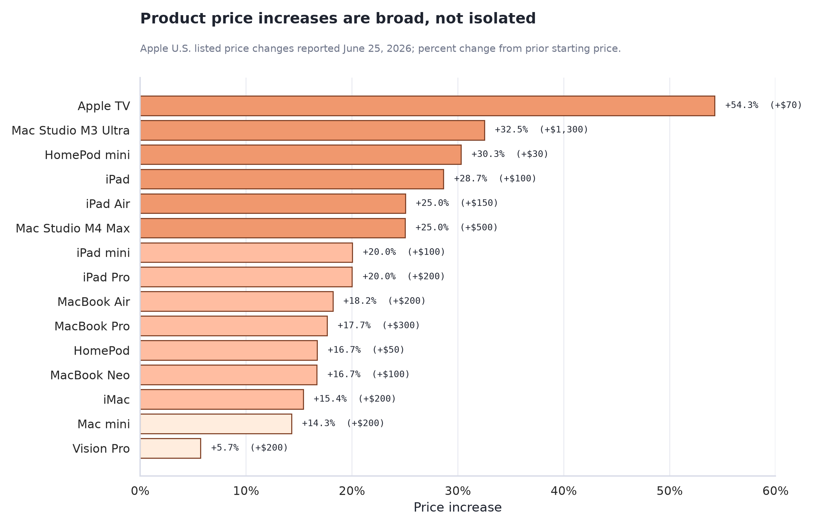
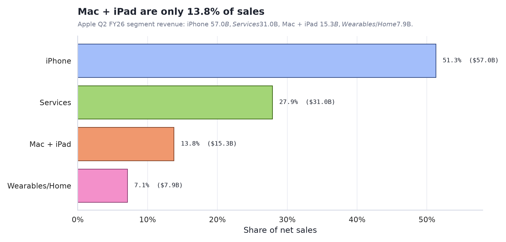
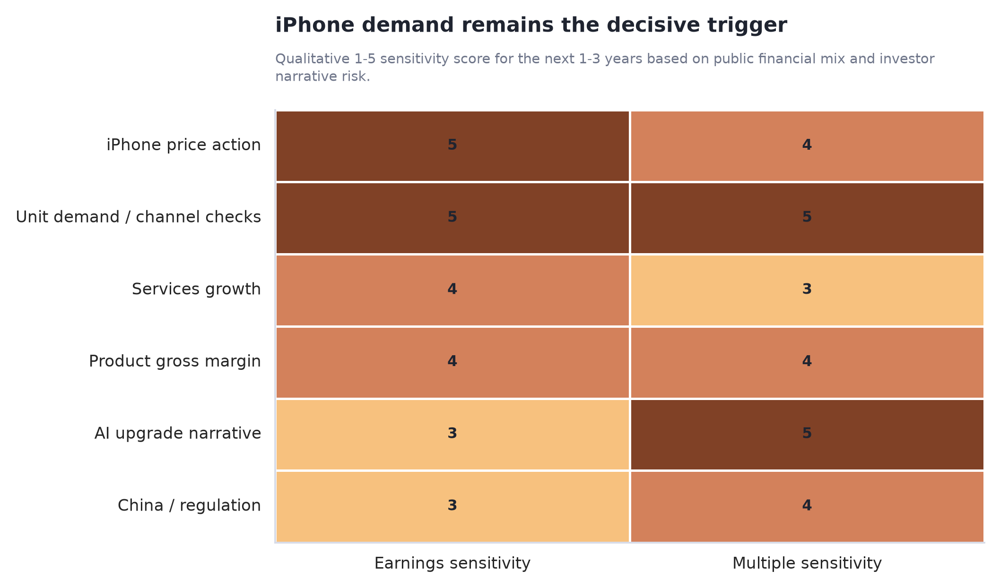
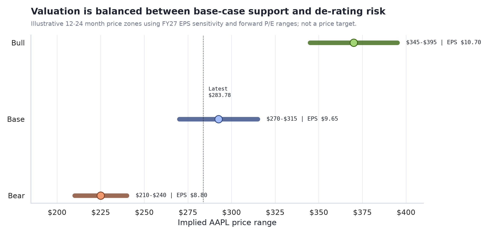

Bear case
$210-$240
iPhone 涨价引发换机延迟，Mac/iPad 需求下滑，Services 增速回落；市场把 AAPL 从高质量成长重新定价为低增长消费电子。
Investor research memo · June 2026
Mac/iPad 涨价本身不是决定股价的最大变量；真正影响未来 1-3 年收益率的是 iPhone 是否跟涨、需求弹性是否恶化，以及市场愿意给苹果多少估值溢价。
Executive Summary
涨价保护毛利，但也暴露成本周期压力。当前股价约 $283.78，落在基本情景 $270-$315 区间内，风险收益比不算便宜，也没有到必须退出。
Mac + iPad 约占 Q2 FY26 收入 13.8%；即便这些品类销量受压，对总收入的穿透有限。市场更担心的是这是不是 iPhone 涨价的前哨。
Gartner 预计 2026 年 DRAM+SSD 价格到年底上涨 130%，PC/手机平均价格分别受推升 17%/13%。苹果的高端用户和生态黏性提高了转嫁能力，但不能消除换机延迟。
如果 iPhone 跟涨但销量稳、Services 继续双位数增长、产品毛利率守住，AAPL 仍可维持高估值；反之会出现 EPS 与 PE 双杀。
Finding 1 · Price Action
2026 年 6 月 25 日，苹果上调了所有 Mac 和 iPad，并同步上调 Apple TV、HomePod、Vision Pro 等产品。涨幅从 HomePod mini 的 +$30 到 Mac Studio M3 Ultra 的 +$1,300 不等，MacBook Air 从 $1,099 到 $1,299，iPad Air 从 $599 到 $749。

Finding 2 · Business Exposure

Q2 FY26 中，iPhone 占收入约 51.3%，Services 占 27.9%，两者合计接近 79.2%。Mac + iPad 合计约 13.8%。因此，“Mac/iPad 涨价”对总收入和 EPS 的直接弹性有限，但它会改变市场对后续产品线涨价的预期。
| 业务线 | Q2 FY26 收入 | 同比 | 对这次涨价的含义 |
|---|---|---|---|
| iPhone | $56.994B | +22% | 最大收入池。若后续 iPhone 跟涨，投资结论会明显变化。 |
| Services | $30.976B | +16% | 高毛利防线。只要服务增长强，硬件压力可被部分吸收。 |
| Mac | $8.399B | +6% | 涨价保护 ASP，但企业/教育换机可能延迟。 |
| iPad | $6.914B | +8% | 教育、家庭、创作者需求更可能被价格抑制。 |
Finding 3 · Decisive Variable
对 AAPL 持有人来说，问题应当从“苹果涨价是不是利空”改成“涨价能否在不破坏 iPhone 换机周期的前提下保护毛利”。如果能，涨价是利润保护；如果不能，它会变成收入增长和估值倍数的双重压力。
iPhone 涨价引发换机延迟，Mac/iPad 需求下滑，Services 增速回落；市场把 AAPL 从高质量成长重新定价为低增长消费电子。
Mac/iPad 涨价保护毛利，iPhone 若跟涨幅度温和，单位需求维持可控；Services 和回购继续托住 EPS。
AI 功能拉动升级周期，内存成本见顶，iPhone 高端机型 ASP 上升且销量韧性强；市场愿意维持 33-36x 的高倍数。

第一层是销量。 如果涨价后 Mac/iPad 订单只是轻微软化，说明苹果品牌仍有价格权；如果 iPhone 也涨价且预购疲软，股价会先反应估值风险。
第二层是毛利。 成本上涨若被价格覆盖，产品毛利率可能守住；若价格不够或促销增加，毛利率会比收入更早暴露压力。
第三层是叙事。 AAPL 的高估值不只来自硬件销量，还来自服务、生态、AI 升级和资本回报。涨价事件会考验这些叙事是否还能成立。
Finding 4 · Valuation
按最新报价约 $283.78、FY27 EPS 共识 $9.65 计算，AAPL 的 FY27 forward P/E 约 29.4x。这个倍数要求市场相信三件事：iPhone 需求不崩、Services 继续增长、AI 与生态叙事仍能支撑长期溢价。

Recommended Next Steps
我的建议是：如果你已经持有，核心仓位可以继续拿，但不要把“苹果品牌强”当成无限估值保护。未来 1-2 个季度用明确指标做复盘，而不是凭新闻情绪操作。
Further Questions
Caveats and Assumptions
| 假设/风险 | 为什么重要 | 如果变化，结论如何调整 |
|---|---|---|
| 本报告使用公开资料和情景推演 | 没有使用苹果内部订单、渠道库存、供应链实时合同价。 | 若出现更精确的渠道数据，应优先更新销量弹性判断。 |
| 估值区间不是目标价 | 区间用于判断风险收益比，不是买卖承诺或投资建议。 | 市场利率、科技股整体估值、AI 叙事变化都会改变 PE 区间。 |
| iPhone 跟涨尚未发生 | 这是未来 1-3 年最关键但尚未落地的变量。 | 若苹果明确不涨 iPhone，熊市情景概率下降；若大幅涨价，需重估需求风险。 |
| 内存成本周期可能超预期 | Gartner 预计成本压力会影响 2026 设备价格和出货。 | 若价格峰值延后到 2027 以后，毛利压力和二次涨价风险上升。 |